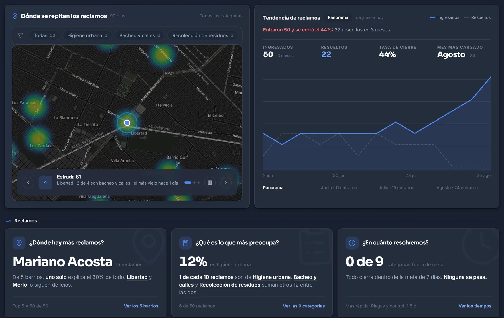

Tu municipio, en línea con la gente.
Reclamos y trámites en tiempo real. Dejan de ser dos mundos: el vecino y el municipio ven lo mismo, al mismo tiempo.
El vecino sigue su reclamo como sigue un pedido
Desde que reporta hasta que la cuadrilla resuelve, cada paso llega a su celular. Nadie vuelve a llamar para preguntar qué pasó.
Reclamo enviado
Foto y ubicación GPS desde la app, la web o WhatsApp.
La IA clasifica y asigna
Categoría, zona y cuadrilla correcta, sin intervención manual.
Cuadrilla en camino
El vecino recibe la notificación cuando el equipo sale a trabajar.
Resuelto con evidencia
Foto de antes y después. Todo queda trazado y auditable.
El mismo reclamo, visto de los dos lados
Lo que el vecino carga en su celular aparece al instante en el panel del municipio. Sin llamadas, sin cuadernos.
Reclamos con seguimiento real
El vecino reporta con foto y GPS, sabe cuándo la cuadrilla salió a trabajar y recibe la evidencia al cierre. La IA clasifica, detecta duplicados y asigna sola.
Trámites con RENAPER y turnos
Registro oficial con identidad validada vía RENAPER, turnos online y expediente con seguimiento paso a paso. El vecino no hace colas; el municipio no pierde papeles.
El intendente ve esto todas las mañanas
La situación real del municipio, sin pedir informes: qué es urgente, qué falta asignar y dónde se repiten los problemas.

Precios transparentes, por tamaño de municipio
En pesos argentinos. Sin cargos por vecino, sin permanencia, con 3 meses gratis.
Estándar
Hasta 20.000 habitantes
Express
20.000 a 100.000 habitantes
Premium
Más de 100.000 habitantes
Poné tu municipio en línea con la gente
3 meses gratis, sin tarjeta. App gratuita para los vecinos. Listo en 1–2 semanas.